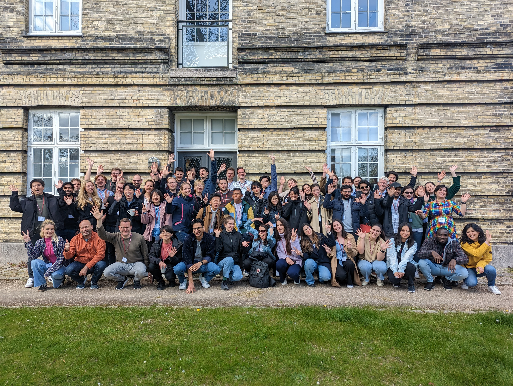
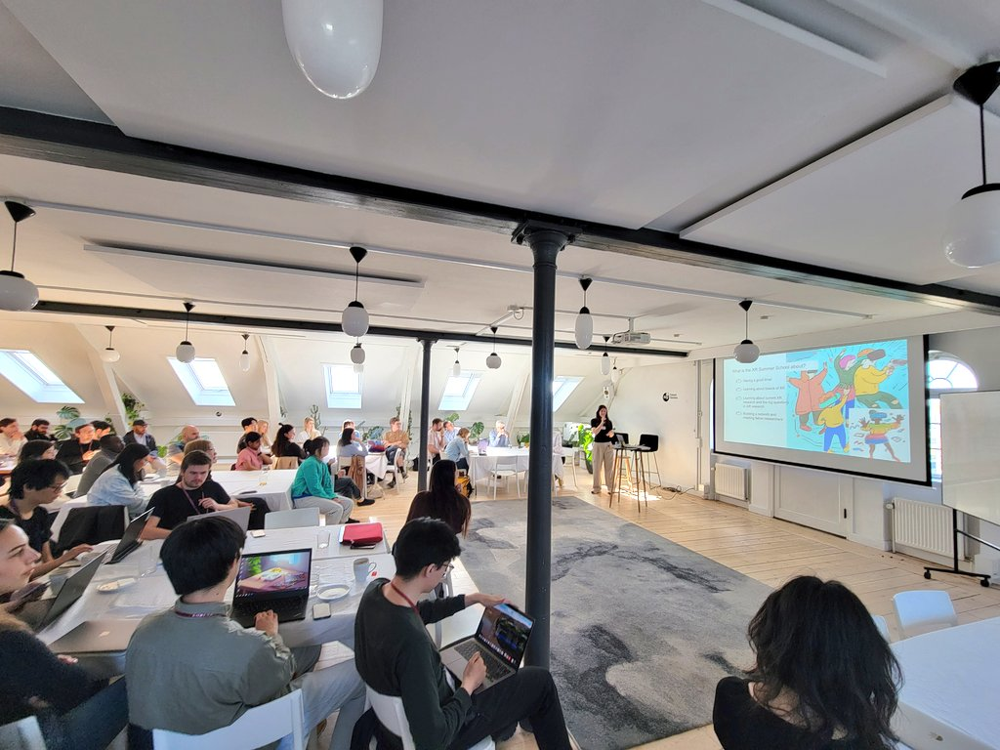
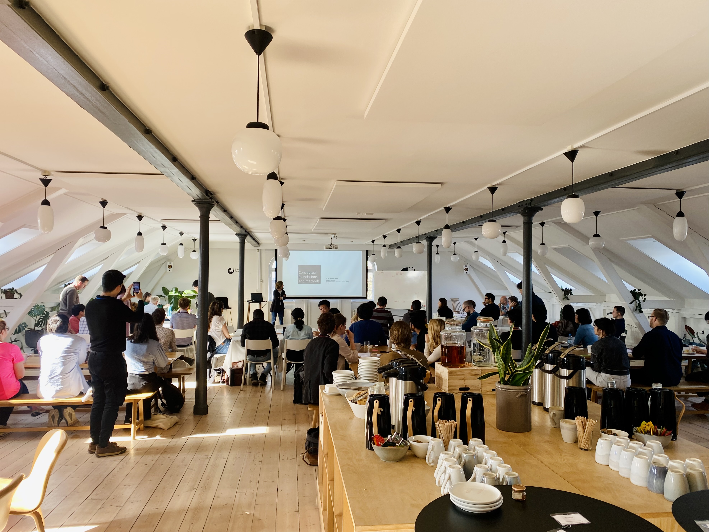

Service
It is important to me to actively contribute to the international and national research communities. I have served on the organizing committees of major conferences, including as Full Paper Co-Chair for NordiCHI 2026, Paper Co-Chair for Mensch und Computer 2023, and Paper Chair Assistant for CHI 2024. I helped establish XR in the Danish and Nordic HCI community through a symposium and summer school in 2023, and I have organized community events such as the Danish HCI Day 2024 and the Nordic Pre-CHI 2025. I am a founding member of the CHI Nordics and germanHCI initiatives and a steering committee member of the German Pre-CHI series.
Conference Organization
Conference Organizing Committees
NordiCHI '26
Full Paper Co-Chair, ACM SIGCHI Nordic Conference on Human-Computer Interaction
EICS '24
Late Breaking Work Chair, ACM SIGCHI Symposium on Engineering Interactive Computing Systems
CHI '24
Paper Chair Assistant, ACM CHI Conference on Human Factors in Computing Systems
MuC '23
Paper Co-Chair, Mensch und Computer, the largest conference series on human-computer interaction in Europe
HHAI '23
Workshop Co-Chair, International Conference on Hybrid Human Artificial Intelligence
TEI '23
Publication Co-Chair, ACM International Conference on Tangible, Embedded and Embodied Interaction
CHI '21
Subcommittee Chair Assistant, User Experience Subcommittee, ACM CHI Conference on Human Factors in Computing Systems
ETRA '21
Short Paper Co-Chair, ACM Symposium on Eye Tracking Research and Applications
ETRA '20
Web Chair, ACM Symposium on Eye Tracking Research and Applications
Workshop Organization
ETRA '23
Organizer, International Workshop Series on Pervasive Eye Tracking and Mobile Eye-Based Interaction (PETMEI)
ETRA '22-'23
Organizer, EduEye: Workshop on Eye Tracking in Learning and Education
UBICOMP/ISWC '21
Organizer, The Fourth Workshop on Eyewear Computing “Augmenting Social Situations and Democratizing Tools”
Community Building
I care about building and connecting research communities. Below are the community initiatives I helped found, followed by a few of the academic community events I have led the organization of.
Initiatives and Steering Committees
CHI Nordics
Founding Member, CHI Nordics initiative
since '25
Steering Committee Member, German Pre-CHI event series
GermanHCI '18-'20
Founding Member, German HCI Research Community, a PhD-led initiative to promote German HCI research
GermanCHI '20
Organizer, Virtual German CHI Week, an online event for researchers participating in CHI
German Pre-CHI '20
Organizer, German Pre-CHI Event, a networking and community event for researchers participating in CHI (canceled because of Covid-19)
Nordic Pre-CHI 2025
The Nordic Pre-CHI event provides an opportunity for researchers from the Nordics to present their accepted CHI 2025 papers and discuss them in a smaller circle. Additionally, it provides an excellent opportunity for younger researchers to get a taste of the quality of work presented at CHI and network with other peers, as well as senior researchers. Therefore, everyone from students to professors interested in HCI is welcome.


Danish HCI Day 2024
The Danish HCI Day brings together HCI researchers from all over Denmark to network and exchange research ideas.
Extended Reality Symposium 2023
This symposium explores Extended Reality (XR) as a new scientific method for health sciences and its applications for training, treatment, and diagnostics. The symposium is targeted to XR researchers and researchers in the health sciences who apply or are interested in understanding the potential of XR, as well as the public. Knowledge sharing, skill exchange, and interactions between the target groups are facilitated by featured talks, lightning talks on applications, a panel for grand themes in XR, and a poster and demo reception.
Extended Reality Summer School 2023
The summer school on XR invited participants to Copenhagen, Denmark, for three days May 2-4. The participants learned about a wide range of topics across Human–Computer Interaction with Extended Reality, including XR prototyping, eye-tracking, haptics and perception. The learning sessions in the first two days consisted of introductory lectures, brainstorming, and hands-on hackathon activities, as well as an engaging and fun social program. The grand finale of the summer school was the one-day symposium on XR, where the summer school participants were be joined by other XR researchers to hear featured talks from leading international XR researchers, including a panel discussion about the grand challenges on XR and health by local XR industry leaders. The summer school participants presented their own ideas in a poster and demo session at the symposium.



Program Committees and Reviewing
CHI '23, '25, '26
Full Paper Associate Chair, ACM CHI Conference on Human Factors in Computing Systems
CHI '26, '27
Meet-Ups Juror, ACM CHI Conference on Human Factors in Computing Systems
CHI '26
Paper Awards Committee, Interacting with Devices Subcommittee, ACM CHI Conference on Human Factors in Computing Systems
MobileHCI '24
Full Paper Associate Chair, ACM International Conference on Mobile Human-Computer Interaction
VRST '23, '24
Full Paper Associate Chair, ACM Symposium on Virtual Reality Software and Technology
MobileHCI '23
Late Breaking Work Associate Chair, ACM International Conference on Mobile Human-Computer Interaction
CHI '21-'22
Late Breaking Work Associate Chair, ACM CHI Conference on Human Factors in Computing Systems
MuC '20
Short Papers Associate Chair, Mensch und Computer
I have reviewed for the following journals and conferences since 2018 and have received 18 recognitions for outstanding reviews, 7 of them for my Associate Chair work for CHI 2026.
Conferences: CHI, UIST, VRST, MobileHCI, ETRA, IEEE VR, ISMAR, AutomotiveUI, NordiCHI, Mensch und Computer, Augmented Humans, IMWUT
Journals: ACM TOCHI, IEEE TVCG, IJHCS, IEEE Transactions on Games, IEEE VR Journal Papers, Virtual Reality (Springer)